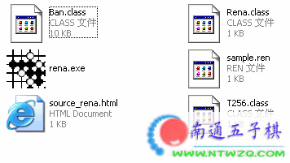

如何发rena互动谱详细说明【原创文章】
#1 如何发rena互动谱详细说明【原创文章】 作者：有志青年 发表时间：2006-6-29 12:35:49
一般在论坛中发互动谱无外乎两种：rena和lib。
我们首先来讲rena方式的互动谱。
rena互动谱有如下的优点：
1、读取速度快，这是lib互动谱所不能比的。
2、可以发布多分支棋谱，这也是lib互动谱所不能实现的。
rena互动谱的缺点：
1、以往rena的互动谱不能向lib互动谱那样可以在edit和view之间切换，也就是说不能随意打谱研习。【南通五子棋网站的rena软件已经可以实现在线打谱研习】，各位五子棋爱好者可以从南通五子棋下载rena打谱软件，它生成的代码支持在线打谱功能。
2、rena互动谱的注释内容只能在棋谱最下方一行内显示，这是一个不足。
我们不推荐用lib方式发互动谱，若您需要renlib软件可以到这里下载：ShowPost.asp?ThreadID=8
说了这么多，下面讲如何使用rena软件！
一、软件介绍：
1、下载南通五子棋网站提供的rena软件：点击下载
2、释放后的文件如下图所示，其中rena是主文件，双击运行它。

3、打开软件后的软件界面如下，看到了吗？是中文版哟，国内可找不太到的哟。
4、右边打谱区域就不多讲了，主要讲左边的一些功能按钮，如下图。
5、第一组
平时我们随意打谱的时候，选择第二个按钮，这样就处于编辑状态【这也是默认状态】
对于一些定式或者其它希望按照原有落点回忆的棋谱，选择第一个按钮，处于阅读状态
至于第三个按钮，那是我们在打谱时希望在棋谱上标注一些文字或者字母的时候用的，它将配对第六步中的最后一项。
6、第二组
第一个就不用多讲了，是擦除按钮，第二个是保存文件按钮。
第三个是我们最常用的按钮，在你打谱结束之后，点击此按钮【电脑没有任何提示，但是已经成功】会将你打谱的信息复制到电脑的内存中。后面详细讲操作步骤，这里仅做介绍。
第四个不是按钮，是个文本输入框，默认打开的时候是个日文，你可以在其中输入你想要的文字或者字母。
7、第三组
这个就不介绍了吧，前进后退。
二、如何在论坛中发布互动棋谱
1、打开rena软件，开始打谱
2、在你希望标注的地方先点击第一组按钮中的A，然后在第二组按钮中的文本输入框中输入你想标志的文字或者字母
3、点击第二组按钮中的按钮。
4、到论坛中选择代码发贴方式，，选择第二个。
5、右键点击选择粘贴，或者用键盘中的ctrl＋v，最后点击发布就ok了。
效果见二楼！
#2 Re:如何发互动谱详细说明 作者：有志青年 发表时间：2006-6-29 12:36:50
#3 Re:如何发rena互动谱详细说明【原创文章】 作者：清逸 发表时间：2006-7-7 12:56:31
 真好~~~
真好~~~
#4 Re:如何发rena互动谱详细说明【原创文章】 作者：清逸 发表时间：2006-7-7 12:58:20
【南通五子棋网站的rena软件已经可以实现在线打谱研习】，各位五子棋爱好者可以从南通五子棋下载rena打谱软件，它生成的代码支持在线打谱功能。
#5 Re:Re:如何发rena互动谱详细说明【原创文章】 作者：梦之岛黄飞鸿 发表时间：2006-7-29 14:01:02
#6 Re:如何发rena互动谱详细说明【原创文章】 作者：踵酃 发表时间：2010-4-25 22:25:18
hh